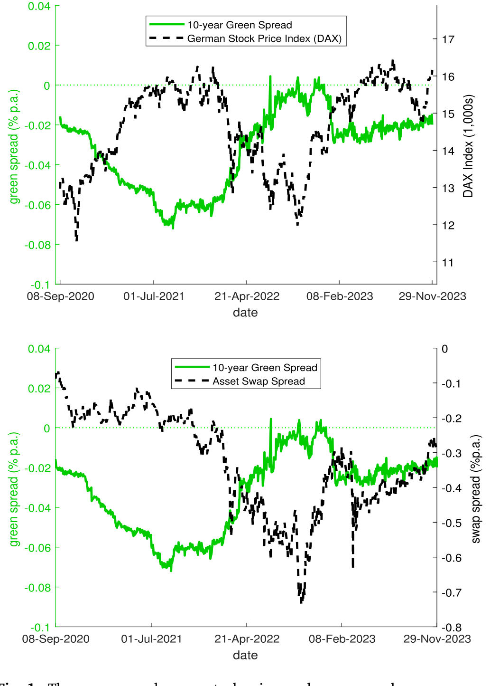
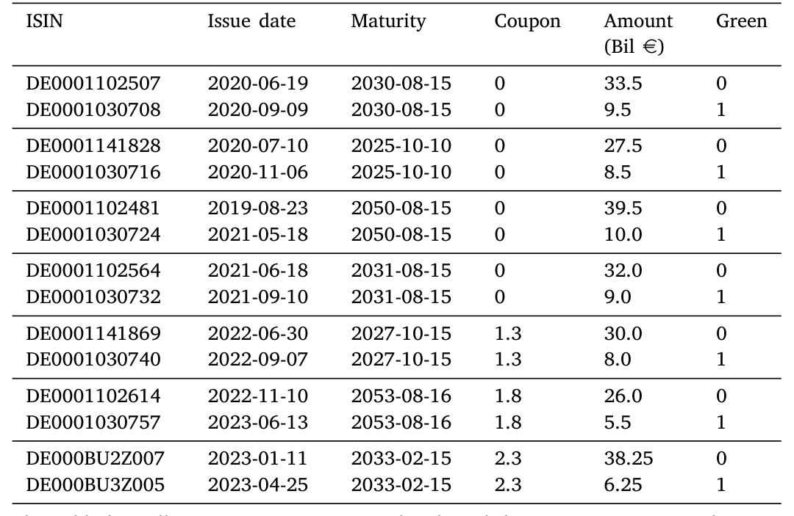
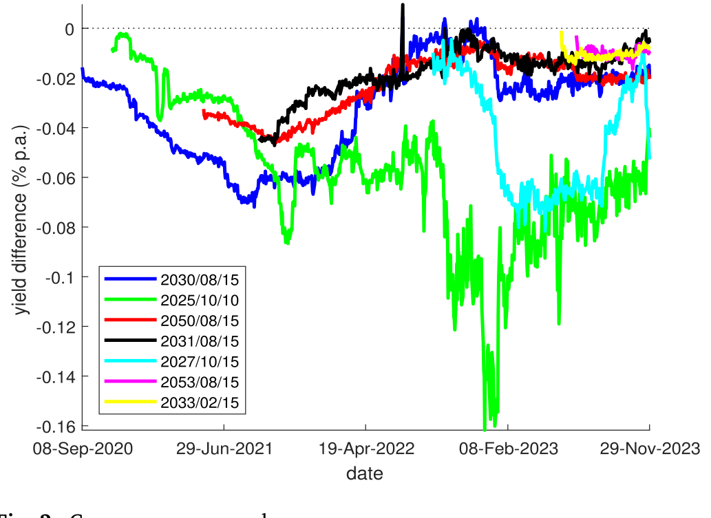
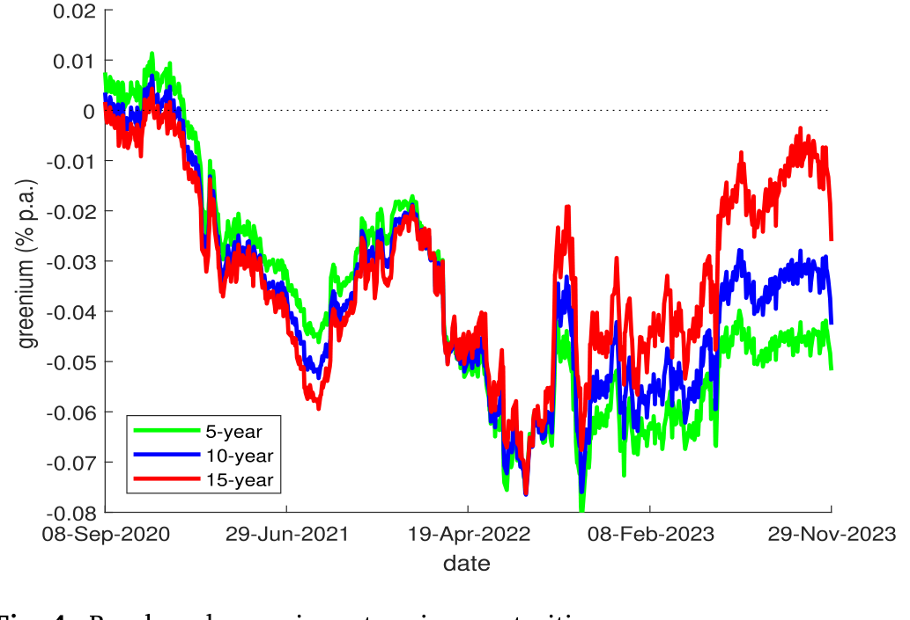
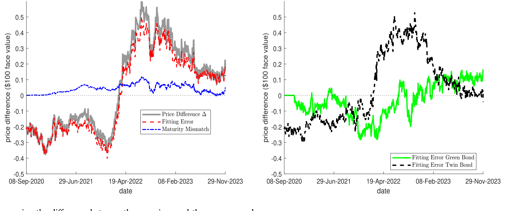
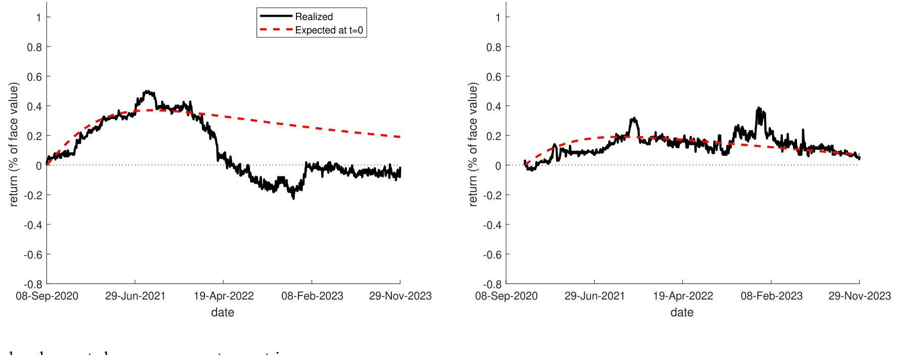
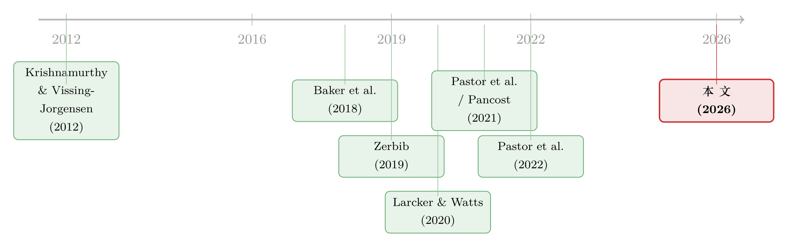

绿色溢价真的归零了吗？——藏在德国孪生国债里的两种「便利收益」
本文读的是 D'Amico, Klausmann & Pancost (2026, Journal of Financial Economics)：作者利用德国政府「孪生」绿债与传统债完全相同的现金流结构，搭起一个动态期限结构模型，把那个只反映投资者环境偏好、与现金流预期无关的「绿色溢价（greenium）」从嘈杂的收益率利差里干净地剥离出来。结论是：肉眼可见的绿色利差到 2022 年底缩到了零，但真正的绿色溢价并没有消失——它只是被另一种「便利收益」对冲掉了。平均下来，无风险绿色溢价是被精确估出的 4 个基点，而这个静态数字掩盖了它巨大的时变性：期限结构从 2020–2022 年的近乎水平，到 2023 年初变成了倒挂。
1 一个看似板上钉钉的结论
先讲一个画面。2022 年底，俄乌战争点燃的能源危机正烧到最旺，欧洲资本市场风声鹤唳。如果你在这个时点去看德国政府那只 2030 年 8 月到期的绿色国债，和它那只期限、票息一模一样的传统「孪生」兄弟之间的收益率差——也就是所谓的绿色利差（green spread）——你会发现一件令人沮丧的事：这个利差缩到了零。
按字面读，这意味着投资者已经不愿意为「绿色」多付一分钱了。绿色溢价，似乎在危机中蒸发了。
但这真的是结论吗？请看下面这张图。

Figure 1: The green spread versus stock prices and swap spread
如图 1 所示，那条绿线（绿色利差）和德国股指 DAX（上图）、以及十年期 bund 的互换利差（swap spread，下图）几乎是反向同步的。绿色利差归零的那一刻，恰恰是股市触底、互换利差走阔到最深（大约 -70 个基点）的时刻。而互换利差走阔意味着什么？意味着避险资金正疯狂涌入德国传统国债——它是欧洲「现金的次优替代品」。这些资金压低了传统孪生债的收益率，于是绿色利差被动地被压到了零。
换句话说，绿色溢价并没有消失。它是被传统债自己的「便利收益（convenience yield）」给抵消掉了。在同一个绿色利差里，其实藏着两种相互竞争的便利收益：一种是绿色债券自带的「绿色便利收益」（也就是 greenium），另一种是传统安全资产的便利收益。它们对不同的冲击各自反应，谁占上风、此消彼长，会随时间变。仅凭这一个利差，你根本分不清眼前的数字到底是哪种力量在主导。
这是全文的中心张力：完美匹配的孪生债券，其收益率利差也不能照单全收。 它是好几种力量叠加后的净值，而我们真正想要的，只是其中那一份「纯粹由环境偏好驱动」的折价。
2 为什么是德国孪生债
要把这份纯粹的偏好溢价挑出来，你需要一个近乎实验室级别的设定。德国国债市场恰好提供了它。
德国 2020 年 9 月发行了第一只主权绿债，至今绿色证券约占其国债总余额的 3%。它是全球第二大主权绿债发行体，也是唯一采用「孪生」结构发行的国家：每一只由德国财务署（GFA）发行的绿债，都配对一只到期日和票息结构完全一致的传统债。
这套结构的好处是教科书级的。首先，德国国债无违约风险，现金流是确定已知的，于是绿债和传统债之间的任何价差，都只能来自折现率的差异——这把折现率与现金流预期彻底分开了。而在公司债、市政债、股票这些资产类别里，所谓的绿色溢价里永远混着现金流预期的差异，你没法干净地说那是「品味溢价」。其次，GFA 还承诺让绿债的流动性至少不输给传统孪生债，配套了「换券交易」和「绿色回购」两种工具，给绿债设了一个隐性价格地板。

Table 1: (excellent) to D- (poor). According to ISS ESG, ‘‘as of August 21, 2020
如表 1 所示，七对孪生债的到期日和票息逐一对齐。但请注意第二、第五两列：孪生兄弟的发行日可以相差多达 21 个月，年龄不同；而且绿债的发行量远小于传统兄弟（比如 95 亿 vs. 335 亿欧元）。这就埋下了麻烦——流动性和稀缺性的差别，会污染绿色利差。
3 绿色利差到底差在哪
接着，一个自然的问题是：既然孪生债配得这么齐，绿色利差为什么还不能直接当绿色溢价用？作者把毛病拆成了三类。
其一，没有恒定期限。每个绿色利差都绑死在某一对债券上，随着时间推移，它的剩余期限在变，你无法得到一条「固定 10 年期」的绿色溢价时间序列。
其二，特异（idiosyncratic）因素。每个利差只用一对债，忽略了其他孪生对和整条德国国债期限结构里的信息。任何只属于这一对债的因素——年龄差、发行量差、回购抵押价值差——都会渗进这个利差。
其三，共同（confounding）因素。比如第 1 节里那个安全港冲击，它影响所有孪生对，却和环境偏好毫无关系。

Figure 2: German green spreads. This exercise helps us illustrate not only the average mispricing of green
如图 2 所示，把七条绿色利差画在一起，乱象一目了然。两条原始期限都是 10 年、仅相隔一年发行的利差（深蓝与黑），按理说它们捕捉的「未来 9–10 年环境关切的平均影子价值」应当几乎相同，可它们却常常差得很远——这就是特异因素在作祟。而那条 2025 年到期的绿色利差（绿线），在 2022 年底独自走阔到 16 个基点，多半是因为想压低组合碳足迹的投资者一窝蜂涌向了最短期限的绿债（顺带一提，欧央行自有资金组合里的绿债占比，从 2019 年的 1% 一路升到 2022 年的 13%）。一旦 GFA 增发这只券，利差又被打了下去——这是供需失衡，同样与环境无关。
4 模型：把利差拆成三块
但真正关键的一步，在于怎么把这三类噪声系统性地剥掉。作者把单券层面的动态期限结构模型（dynamic term-structure model, DTSM）——具体说是 Pancost (2021) 的框架——扩展到「绿色」和「传统」两类证券上。
模型的精神是这样的：用一组共同的传统因子，外加一个只影响绿债的「绿色」因子，去对所有在外流通的德国国债（绿的和传统的）一起定价。模型每天都从几十只债券里榨取信息，识别出由所有绿色利差共同隐含的那个系统性绿色因子；而每对债特有的特异摩擦，则被甩进模型的定价残差里。于是，每一天，两条拟合出来的（绿色与传统）收益率曲线之差，就是一条在所有期限上都干净的无摩擦绿色溢价期限结构——这就是作者命名的「基准绿色溢价（benchmark greenium）」。
为了把这件事讲透，作者写下了绿色利差的分解式（论文 Eq. 1）。对第 \(i\) 对孪生债、在 \(t\) 时刻：
左边是你能直接观察到的绿色利差 \(Y^{g}_{i,t}-Y_{i,t}\)。右边第一项 \(Y^{*g}_{t}-Y^{*}_{t}\) 才是我们想要的基准绿色溢价。中间那项是共同摩擦，最后那项是特异摩擦。
这个分解把第 1 节的故事翻译成了代数：2022 年底绿色利差归零，并不是 \(a1\) 这一项变成了零，而是 \(a2\)（安全港带来的传统债便利收益）变成了一个足够大的负数，把 \(a1\) 顶掉了。模型的全部价值，就在于它能用横截面里所有债券的信息，把 \(a2\)、\(a3\) 估出来并扣掉，留下 \(a1\)。
这套方法并不只对绿债有用。作者点明：任何「只影响一类资产、不影响另一类」的便利收益——比如货币类资产的便利收益（Krishnamurthy & Vissing-Jorgensen, 2012）——都能套进这个框架。而且在动态设定里，便利收益可以变成「不便利收益」，反之亦然。（关于安全资产便利收益是怎样被「制造」出来的，可参见《无风险国债是「制造」出来的》。）
5 三个主要结果
第一，基准绿色溢价和观察到的绿色利差，差得很远。 它常常显著更大；有时甚至朝相反方向运动；而它的期限结构，从样本早期的近乎水平，到俄乌战争开打后变成了向下倾斜。

Figure 4: Benchmark greenium at various maturities. green projects and quantify their environmental impact.21
如图 4 所示，绿色溢价的期限结构在 2020–2022 年还基本是平的，到 2023 年初已经明显倒挂——短期限的绿色溢价高于长期限。静态地看，整段样本的平均绿色溢价是一个被精确估出的 4 个基点，但这个数字几乎没意义，因为它把巨大的时变性抹平了。倒挂意味着什么？意味着投资者预期「环境关切的价值」会随时间衰减，他们愿意在短期比在长期牺牲更多的财务回报。作者由此给出一条很实在的政策建议：政府该多发短期限绿债，去捕获绿色投资者愿意让渡的这份补贴，再把省下的钱回馈给全体纳税人。
第二，也是识别上最有说服力的一步——安慰剂式的相关性检验。 那些代表混淆与特异风险的代理变量（股市收益、绿债与传统债之间的临时供需失衡）不影响模型估出的绿色溢价，却确实和原始的绿色利差相关。反过来，基准绿色溢价只和环境关切的代理变量相关——比如 2021 年夏天德国那场毁灭性洪水。

Figure 6: Decomposing the difference between the greenium and the green spread
如图 6 所示，作者把「绿色溢价与绿色利差之差」做了分解，清清楚楚地把混淆因素那一块标了出来。这正是模型在做的事：它把与环境无关的系统性风险扒走了，剩下的才更贴近投资者真实的绿色品味。
第三，把「收益率之差」和「预期持有期回报之差」分开。 前者是基准绿色溢价；后者是预期绿色超额收益（expected green excess return），它还额外吃进了「绿色溢价本身的风险」。因为绿色溢价是随机时变的，绿色资产在某些时点反而比传统资产更有风险；对这份风险的补偿可以大到——即便绿色收益率利差是负的，到期之前的预期绿色超额收益仍然为正。这恰恰是作者在样本早期观察到的。静态模型根本造不出这种效果。

Figure 7: Realized and expected green excess returns at issuance
如图 7 所示，发行时点的已实现与预期绿色超额收益被对照画出。这个动态视角还顺手解释了一个老问题：为什么没有环境偏好的套利者，没把绿色利差套没？因为在动态世界里，现金流匹配的两只资产，价格在到期前是可以背离的；要让多空策略真正无风险，你必须持有到期。可一旦考虑保证金约束、回购市场的不完备（长期限回购根本不存在），这种「持有到期」的套利就既贵又险——常见的套利限制（limits to arbitrage）在这里全都成立。
6 文献脉络
把这篇论文放回它生长的那条线上，会看得更清楚。
最早的源头有两支。一支是便利收益的传统：Krishnamurthy & Vissing-Jorgensen (2012) 把安全资产「货币性」的便利收益正式纳入定价，这给了本文「绿色便利收益」一个直接的概念母体。另一支是绿色溢价的实证测量：Baker et al. (2018)、Zerbib (2019)、Larcker & Watts (2020) 等在市政债、公司债、股票里东量西量，估值散布在零到约 100 个基点之间，且彼此打架——因为这些市场里折现率差和现金流差搅在一起，分不开。

然后是理论的关键一跃：Pastor, Stambaugh & Taylor (2021) 给出了环境偏好如何在均衡里生成「品味溢价」的机制；紧接着 Pastor et al. (2022) 第一个用德国孪生债，展示了气候关切上升时这份溢价会走阔。本文正是站在这两篇之上，但更进一步——它不满足于一个静态的、被各种摩擦污染的绿色利差，而是借来 Pancost (2021) 的单券 DTSM，把溢价做成了时变的、无摩擦的、跨期限的一条曲线，并第一次正面估出了「预期绿色超额收益」，从而把 Pastor et al. (2021) 的理论预测和 Pastor et al. (2022) 的已实现回报对上了账。作者自己（D'Amico & Pancost, 2022）关于特殊回购利率的工作，也为「套利受限」这条论证提供了弹药。
7 评论与延伸（Q&A + 研究方向）
(a) 几个可能的疑问
Q：基准绿色溢价和绿色利差，到底差在哪一个字上？
差在「无摩擦」三个字。绿色利差是你直接能看到的、被混淆与特异因素污染过的净数字；基准绿色溢价是模型用全横截面信息把这些污染扒掉之后，剩下那份只由环境偏好驱动的折现率之差。2022 年底绿色利差归零，但基准绿色溢价并没有归零——它只是被传统债的安全港便利收益顶掉了。
Q：4 个基点是不是太小了，小到没有经济意义？
单看这个静态平均确实小，但作者反复强调它「掩盖了巨大的时变」。真正有意思的不是均值，而是它的动态：期限结构从平到倒挂，以及它对洪灾这类环境冲击的持续、正向反应。把一个高度时变的序列压成一个数，本来就会丢掉全部信息。
Q：那个「安慰剂」相关性检验为什么有说服力？
因为它是一个可证伪的预测。如果模型真的把非环境因素扒干净了，那么股市、供需失衡这些与环境无关的变量就该与基准绿色溢价不相关、却与原始绿色利差相关；而环境代理（洪水）则应只与基准绿色溢价相关。数据恰好是这个模式。这比单纯报告一个拟合优度要硬。
Q：为什么无风险这一点这么重要？
因为它把现金流维度彻底锁死了。德国国债违约风险为零、现金流确定，绿债与传统债的任何价差只能来自折现率。换到公司债或股票，绿色溢价里永远混着违约预期、现金流预期的差异，你估出来的东西就不再是「纯品味溢价」了。这也是为什么文献里的估值会从零散到 100 个基点。
Q：套利者为什么不把绿色利差抹平？
因为在动态设定里，现金流匹配的两只券在到期前价格可以背离，无风险套利必须持有到期。而长期限回购不存在、保证金会被追缴，使得「锁住空头腿直到到期」既贵又险。绿色资产有时还比传统资产更有风险——套利者要的补偿可能比利差还大。
Q：倒挂的期限结构，给政府的启示是反直觉的吗？
有点。直觉上你可能觉得「长期绿色项目该发长期绿债」，但模型说投资者愿意为短期绿色多让利，于是发短期绿债才能最大化捕获这份补贴。前提是你相信模型估出的倒挂是真实偏好，而非某种短端的技术性扭曲（见下方研究方向）。
(b) 几个可能的研究问题与提案
-
把这套方法搬到公司绿债 / 信用市场。【经济故事】公司绿债同时有折现率差和现金流（违约）差，正是本文回避的难点；但如果能找到「同一发行人、同评级、近乎同期限」的绿/非绿配对，就能用类似 DTSM 把绿色便利收益从信用利差里剥出来。【可行性】中。数据上需要 TRACE 加上发行人层面的绿债标注（Bloomberg / CBI），识别难点在于公司债没有德国式的完美孪生，得用倾向匹配或发行人固定效应近似，结论的干净程度会打折。
-
外资持有人是不是绿色便利收益的边际定价者？【经济故事】欧央行把自有资金组合的绿债占比从 1% 推到 13%，本身就是一个供需冲击。若能识别出哪些投资者（境外官方机构、ESG 基金）在边际上推动了绿色溢价，就能把「品味」进一步归因到具体持有人。【可行性】中。需要 ECB SHS 或德国央行的持有人层面持仓数据，配合本文的溢价序列做事件研究；可行但持仓数据获取是门槛。
-
绿色便利收益与传统便利收益的「跷跷板」。【经济故事】本文已指出两种便利收益此消彼长，但没有正面建模它们的协动。能不能写一个双便利收益的期限结构模型，把安全港冲击和气候冲击当作两个可识别的因子？【可行性】高。本文的 DTSM 框架已经现成，加一个传统便利收益因子（用 swap spread 或 special repo 识别）即可，数据也都在手。
-
流动性差异是污染还是信号？【经济故事】绿债发行量小、更不流动，本文把它当成要扒掉的特异因素。但流动性溢价本身也可能与绿色偏好内生相关（绿色投资者更愿意持有到期、换手更低）。把流动性当成结果而非噪声来研究，可能另有故事。【可行性】中。需要绿债的成交、买卖价差与回购数据，识别上要小心流动性与绿色偏好的内生纠缠。
8 我的判断
这篇论文最漂亮的地方，是它把一个被反复测量却始终说不清的对象，重新定义清楚了：绿色溢价不是一个利差，而是一条无摩擦、时变、跨期限的曲线，而原始的绿色利差只是它被噪声污染后的影子。德国孪生债 + 无违约 + 单券 DTSM，这套组合拳几乎是为这个问题量身定做的，安慰剂式的相关性检验也让人信服——它确实把非环境因素扒掉了。
担忧主要有两点。其一，整套结论依赖那个「绿色因子只影响绿债、不影响传统债」的模型设定。这个识别假设很关键，但它本质上是一个结构性假设，如果绿色因子其实通过别的渠道也渗进了传统债的定价，那条干净的曲线就没那么干净了。其二，倒挂的期限结构、以及那份精确到 4 个基点的均值，都建立在一个只有七对孪生债、三年出头的短样本上；短端尤其容易被欧央行增持、增发这类技术性供需事件主导，把它直接读成「投资者偏好随期限衰减」，我会再保守一点。
后续我最想看到的，是把这套方法推到有违约风险的资产上（公司绿债、绿色市政债）——那才是绿色转型真正需要融资的地方，也是把这个无风险「基准」用起来给风险绿债定价的最终目的。（关于 ESG 偏好如何反过来抬高其他成本，可参见《良心、价格与监督》。）
参考文献
Baker, M., Bergstresser, D., Serafeim, G., Wurgler, J. (2018). Financing the Response to Climate Change: The Pricing and Ownership of U.S. Green Bonds. NBER Working Paper 25194.
D'Amico, S., Kim, D.H., Wei, M. (2018). Tips from TIPS: The informational content of Treasury inflation-protected security prices. Journal of Financial and Quantitative Analysis 53(1), 395–436.
D'Amico, S., Pancost, N.A. (2022). Special repo rates and the cross-section of bond prices: The role of the special collateral risk premium. Review of Finance 26(1), 117–162.
Krishnamurthy, A., Vissing-Jorgensen, A. (2012). The aggregate demand for Treasury debt. Journal of Political Economy 120(2), 233–267.
Larcker, D.F., Watts, E.M. (2020). Where's the greenium? Journal of Accounting and Economics 69(2), 101312.
Pancost, N.A. (2021). Security-Level Dynamic Term-Structure Model. Working Paper.
Pastor, L., Stambaugh, R.F., Taylor, L.A. (2021). Sustainable investing in equilibrium. Journal of Financial Economics 142(2), 550–571.
Pastor, L., Stambaugh, R.F., Taylor, L.A. (2022). Dissecting green returns. Journal of Financial Economics 146(2), 403–424.
Zerbib, O.D. (2019). The effect of pro-environmental preferences on bond prices: Evidence from green bonds. Journal of Banking & Finance 98, 39–60.